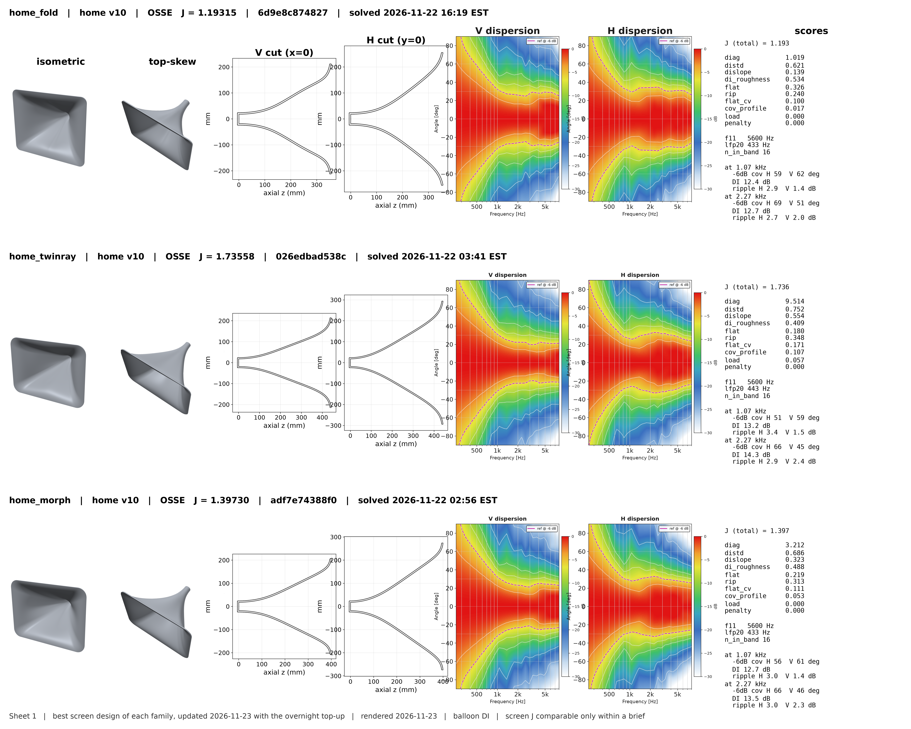
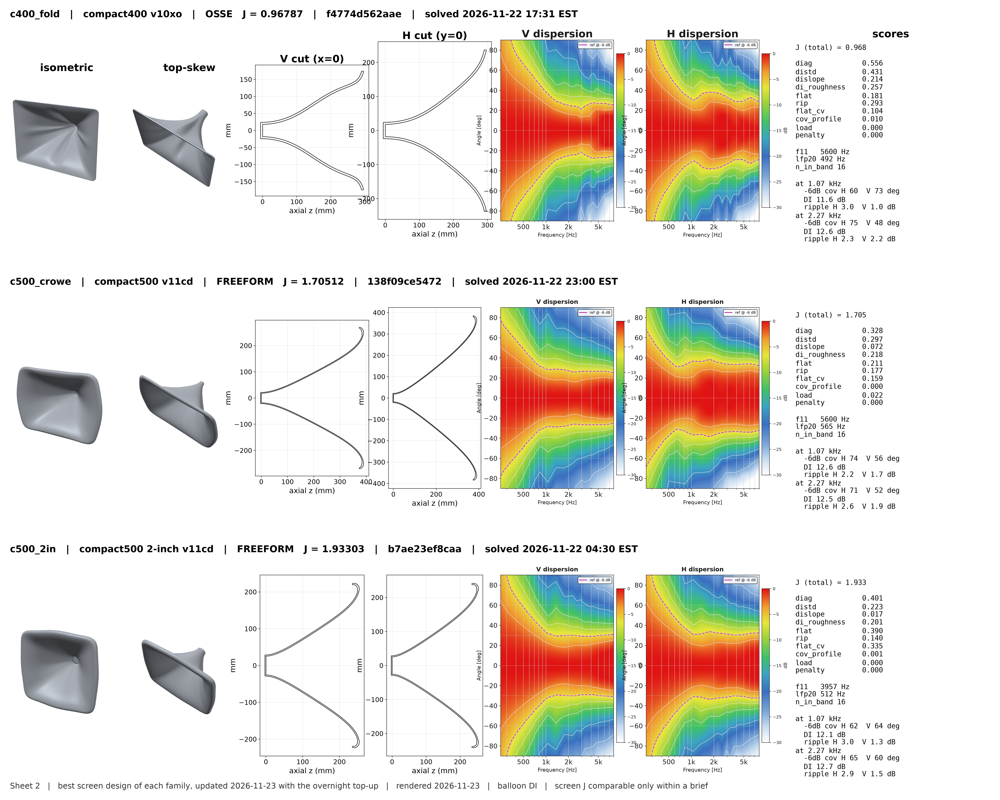
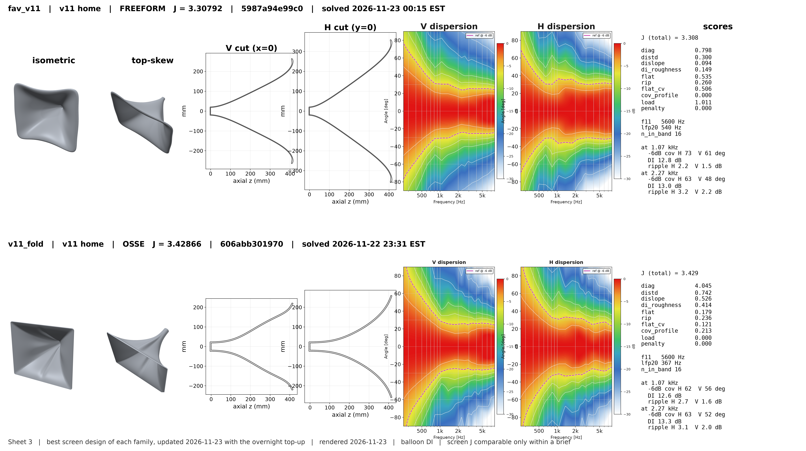

01 / Contact sheets
Three sheets, eight horns.
Each row: isometric, top-skew, V cut (x=0), H cut (y=0), V dispersion, H dispersion and the score ledger. Click any sheet for the full 6000 px image.



02 / The eight
What is on the sheets.
J is the stored screen objective of each run. Size is the outer shell (quarter-mesh bounding box doubled).
| Design | Brief | Screen J | Outer W×H×D mm | Design hash | Note |
|---|---|---|---|---|---|
| Home Fold | home v10 | 1.19315 | 512 × 426 × 362 | 6d9e8c874827 | Gained through k = 3.36, past the old 2.81 cap; still inside the old 600×480 box. |
| Home Morph | home v10 | 1.39730 | 549 × 413 × 406 | adf7e74388f0 | — |
| Home TwinRay | home v10 | 1.73558 | 589 × 430 × 449 | 026edbad538c | — |
| Compact400 Fold | compact400 v10xo | 0.96787 | 474 × 350 × 303 | f4774d562aae | Mouth 474 mm wide — outside the old 400 mm cube. |
| Compact500 Crowe | compact500 v11cd | 1.70512 | 770 × 548 × 393 | 138f09ce5472 | 770 mm wide, outside the old 500 cube; loading term collapsed 0.46 → 0.03, diagonal/off-axis is now the limit. Improved overnight (1.815 → 1.705). |
| Compact500 2-inch | compact500 2-inch v11cd | 1.93303 | 484 × 447 × 257 | b7ae23ef8caa | Separate 2-inch driver identity. |
| FAV v11 | v11 home | 3.30792 | 720 × 608 × 418 | 5987a94e99c0 | 720 mm wide, outside the old 600×480 box. Improved overnight (3.385 → 3.308). |
| v11 Fold | v11 home | 3.42866 | 522 × 445 × 423 | 606abb301970 | Improved overnight (3.617 → 3.429). |
03 / Read this correctly
Screen grade.
Size is separate.
- All J values are the screen grid of their own brief. Never rank J across briefs; verify-grid numbers are different and are not shown here.
- Sizes are the outer shell in mm (quarter-mesh bounding box doubled in width and height).
- Compact400, Compact500 Crowe and FAV exceed their old build envelopes because the envelope was deliberately switched off today (
envelope.enforce: false, 1200 mm sanity ceiling). Filter by size separately if a build constraint returns. - None of these designs is verify-grid confirmed yet.